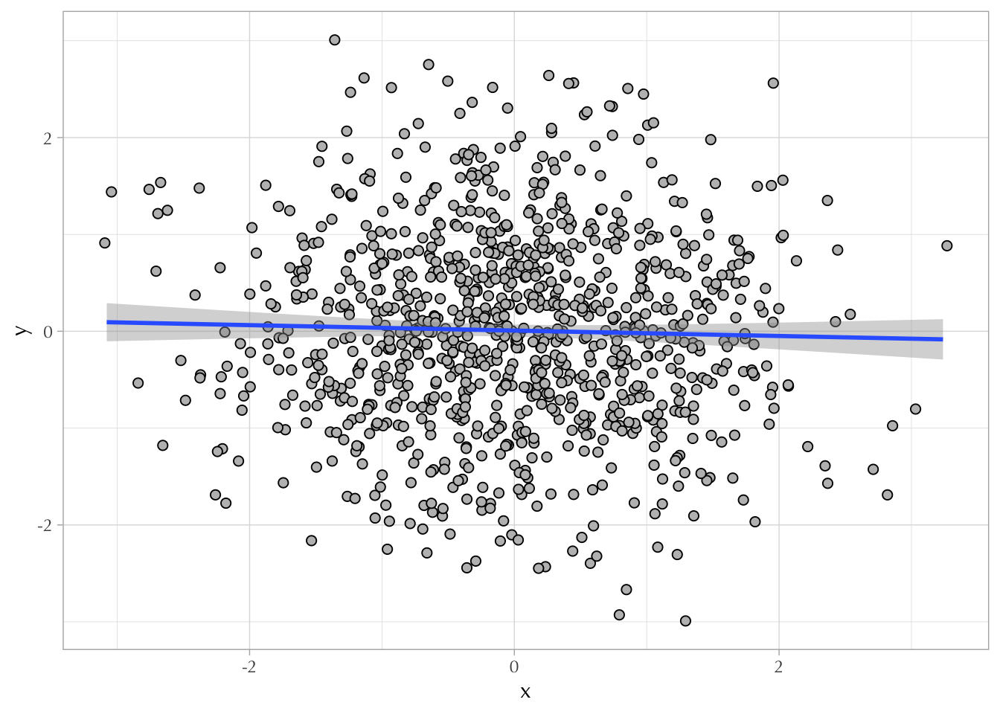
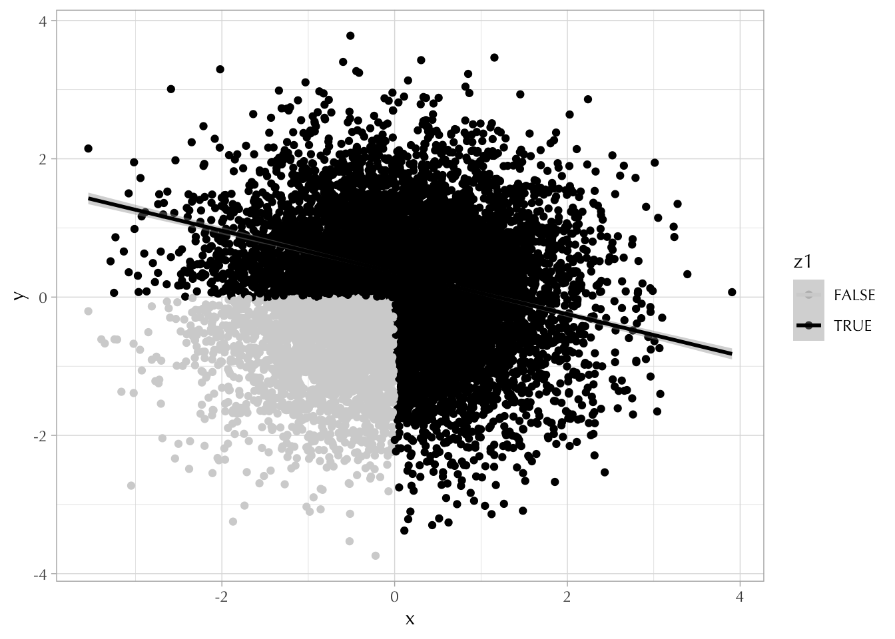
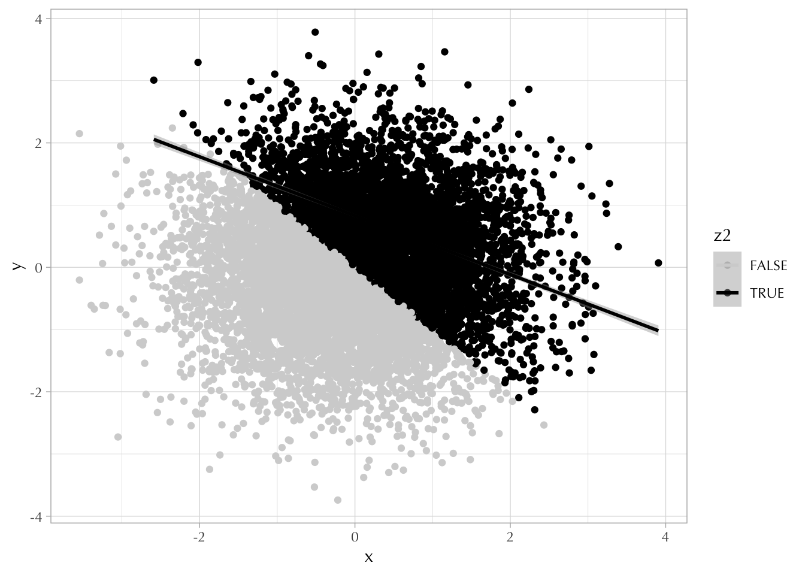
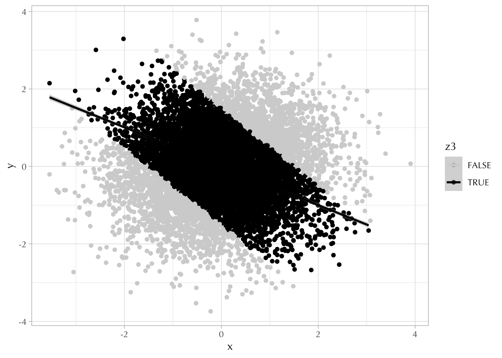
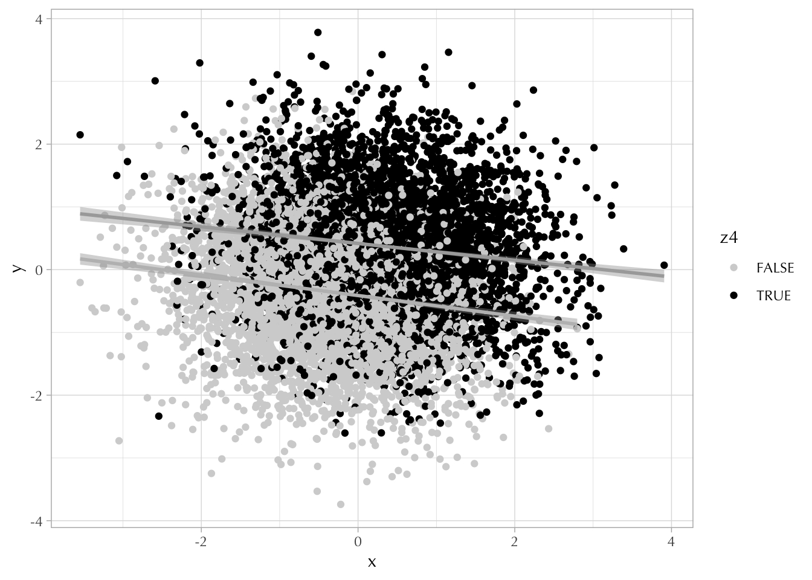

── Attaching core tidyverse packages ──────────────────────── tidyverse 2.0.0 ──
✔ dplyr 1.1.4 ✔ readr 2.1.5
✔ forcats 1.0.0 ✔ stringr 1.5.1
✔ ggplot2 3.4.4 ✔ tibble 3.2.1
✔ lubridate 1.9.3 ✔ tidyr 1.3.0
✔ purrr 1.0.2
── Conflicts ────────────────────────────────────────── tidyverse_conflicts() ──
✖ dplyr::filter() masks stats::filter()
✖ dplyr::lag() masks stats::lag()
ℹ Use the conflicted package (<http://conflicted.r-lib.org/>) to force all conflicts to become errors
theme_set(theme_light(base_family ="Optima"))
4.1 Colliders *
Create the dataset
N <-1e4d <-tibble(x =rnorm(N, 0, 1),y =rnorm(N, 0, 1))ggplot(d[sample(1e4, size =1000, replace =FALSE),], aes(x, y)) +geom_point(shape =21, color ="black", fill ="grey", size =2, position =position_jitter(width =0.1, height =0.1)) +geom_smooth(method ="lm")
`geom_smooth()` using formula = 'y ~ x'

Generate a collider z where x -> z, y -> z
d <- d |>mutate(z1 =ifelse(x >=0| y >=0, TRUE, FALSE),z2 =ifelse(y >=-x, TRUE, FALSE),z3 =ifelse(y >=-x -1.5& y <=-x +1.5, TRUE, FALSE))
The first figure situation:
ggplot(d, aes(x, y, color = z1)) +geom_point() +scale_color_manual(values =c("lightgrey", "black")) +geom_smooth(data = d |>filter(z1 ==TRUE), method ="lm")
`geom_smooth()` using formula = 'y ~ x'

The second figure situation:
ggplot(d, aes(x, y, color = z2)) +geom_point() +scale_color_manual(values =c("lightgrey", "black")) +geom_smooth(data = d |>filter(z2 ==TRUE), method ="lm")
`geom_smooth()` using formula = 'y ~ x'

The third figure:
ggplot(d, aes(x, y, color = z3)) +geom_point() +scale_color_manual(values =c("lightgrey", "black")) +geom_smooth(data = d |>filter(z3 ==TRUE), method ="lm")
`geom_smooth()` using formula = 'y ~ x'

The fourth category:
d <- d |>mutate(log_odds_z4 =1* x +1* y,prob_z4 =exp(log_odds_z4)/(1+exp(log_odds_z4)),z4 =as.logical(rbinom(N, 1, prob_z4)) )ggplot(data = d, aes(x = x, y = y, color = z4)) +geom_point() +scale_color_manual(values =c("lightgrey", "black")) +geom_smooth(data = d |>filter(z4 ==TRUE), method ="lm", color ="darkgrey") +geom_smooth(data = d |>filter(z4 ==FALSE), method ="lm", color ="grey")
`geom_smooth()` using formula = 'y ~ x'
`geom_smooth()` using formula = 'y ~ x'

4.2 Glossary
Conditional average treatment effect: average treatment effect among a specific group defined by certain control variables. For example, if the control variable is \(X\), conditional average treatment effect can be written as \(E[Y_1-Y_0|X = x)\)
Average treatment on the treated: Average treatment effect on those who received the treatment. It can be viewed as the effect of taking a treatment away from those who currently receive that treatment. It is \(E[Y_1-Y_0|T = 1]\)
Average treatment on the untreated: Average treatment effect on those untreated. It can be viewed as the effect of assigning the treatment to those who currently do not have access to. It is \(E(Y_1-Y_0|T=0)\)
4.3 Heterogeneous treatment effect
One example: child tax credit expansion in 2021 on households with different income levels. The CTC in 2021 was distributed in a form of monthly cash transfer on almost all the households with children. However, this policy treatment can have very different effect on households with different income. For example, for those who are in low income (even need to worry about food), the $300 cash transfer can make a difference, while for those who have high income, $300 means nothing.
4.4 Example
The overall average treatment effect for the population:
Because different kinds of people have different variations in treatment (all non-binary people get treated, about half of women get treated), and we control for the differences, therefore this treatment effect is variance-weighted average treatment effect.
It can be calculated as:
The variance among women in treatment: 0.5 * 0.5 = 0.25
The variance among non-binary people in treatment: 0 * 1 = 0
The weighted average there fore is (8 * 0 + 4.67 * 0.25)/(0 + 0.25) = 4.67
However because the variance of non-binary people are 0, the effect is exactly the effect among women.
Since we assume that everyone would have had the same outcome, and we compare the teenagers (treatment group) to adults (control group), the effect we get is a conditional average treatment effect.
It can be calculated as:
(7+7)/2 - (3 +7+8+4)/4 = 1.5
However we should note that teenagers in the sample are all men. There may be heterogeneity in the effect among groups with different gender identities.
4.5 ATT
We can still use the CTC expansion example. ATT will be more useful to consider when the policy makers are thinking about whether this policy should continue. For example, whether this cash transfer should be continued after the pandemic almost ended. In this scenario, the policymakers should look at average treatment effect on the treated (those who received this treatment) to see if taking the policy away will actually make a difference.
4.6 ITT
Intent-to-treat can describe the average treatment effect of assigning treatment, whether or not treatment is actually received?
4.7 ?
Same as 4.6
4.8 Example
It is conditional average treatment effect. The population of interest is all adults in the United States, while what we can observe from this experiment are the reactions to the price change among those who are in college. It is \(E(Effect|Educ = college)\)
4.9 Effect Identified
A randomized experiment using a representative sample: Average Treatment Effect
True randomization within only a certain demographic group: Conditional Average Treatment Effect
Closing back door paths connected to variation in treatment: Variance-weighted treatment effects
Isolating the part of the variation in treatment variable that is driven by an exogenous variable: local average treatment effect
The control group is comparable to the treatment group, but treatment effects may be different across these groups: Heterogeneous treatment effect